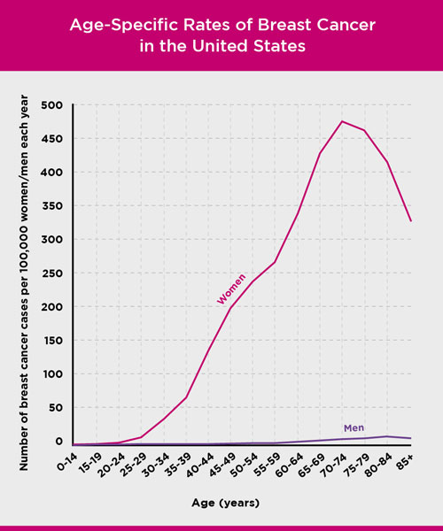
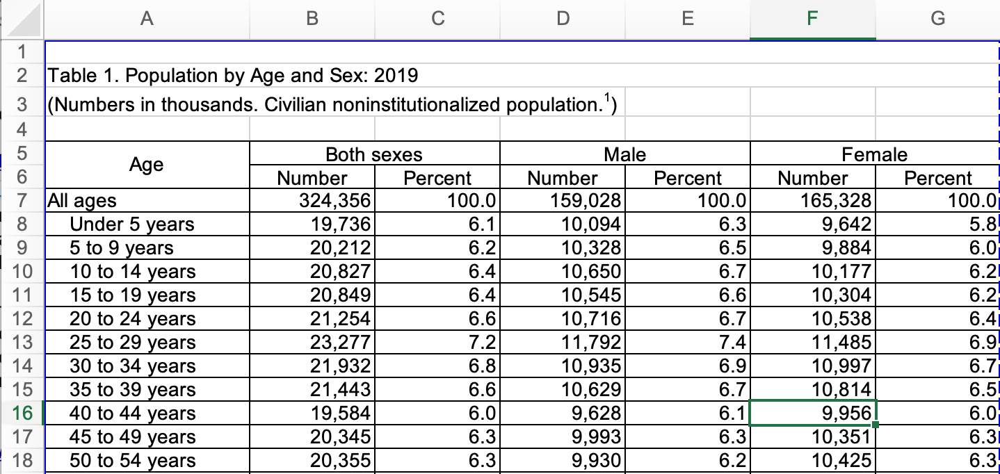

Bayes’ Rule
Contents
7.1. Bayes’ Rule#
7.1.1. Motivating Example – Part 1#
Consider again a motivating example from the Introduction:
A 40 year-old woman’s mammogram comes back positive for a breast cancer tumor. What is the probability that the woman has breast cancer?
This problem can be modeled as a stochastic system:
DEFINITION
- stochastic system#
A stochastic system with one or more inputs and one or more outputs, for which the output(s) is(are) not a deterministic function of the output(s).
Note
One of the most challenging problems for students learning probability is taking a word problem, translating it into mathematics, identifying and finding the necessary information, and solving the problem. There are several keys to being successful at this. The first two are:
1. Identify all of the phenomena (inputs, outputs, state) that may be random. Note that we should identify phenomenon that may be random even if we are given a particular outcome, event, or realization occurred for that phenomenon.
2. Introduce clearly-defined mathematical terminology for all of the random phenomena in the problem.
In this problem, we use randomness to model our lack of knowledge. For example, for the woman under consideration, we do not know whether she has breast cancer or not. Thus, whether the woman actually has cancer is one random phenomenon. Although we are told that the mammogram came back positive, in general, it is a random phenomena that will depend on whether the woman being tested has breast cancer. These two are the only random phenomena in this problem, so we can now introduce notation. Let
\(C\) be the event that a woman is diagnosed with having breast cancer in a given year
\(D\) be the event that a mammogram detects breast cancer in a woman in a given year
Note
The next steps in solving a probability word problem are:
3. Translate the probability that is being asked about from words to mathematics.
4. Use probability techniques to formulate a solution for the problem in terms of probabilities that are known or that can be found from reliable source.
Again, one of the hard things for people learning probability is to even write down a formula for the probability that the problem is asking about. For instance, this problem states: “What is the probability that the woman has breast cancer?” So, some readers may translate this probability to $\(P(C).\)$
That formula is not the probability that this problem is asking about! The reason is that we need to interpret that sentence in terms of the other information given in the problem. In this case, the first sentence states “A 40 year-old woman’s mammogram comes back positive for a breast cancer tumor”. In other words, we are given that the mammogram came back positive for cancer, which in our mathematical notation is \(D\). Thus, the probability that this problem is seeking is \(P(C|D)\), which is the conditional probability that the woman has cancer given that her mammogram detected cancer.
To begin to interpret this probability, the reader needs to understand medical tests are never perfect. When a mammogram detects breast cancer, that does not necessarily mean that a woman has breast cancer. If a mammogram detects breast cancer and a woman does not actually have breast cancer, that is called a false alarm (or a Type I error). The probability of a false alarm is \(P(\overline{C}|D)\). You can find information on false alarm rates for mammograms on the Susan G. Komen Foundation’s web pages at
https://www.komen.org/breast-cancer/screening/mammography/accuracy/
Based on the information on that page, let’s let \(P(D|\overline{C})=0.1\).
If a woman does have cancer, a mammogram should detect it most of the time. The probability of detecting an effect given it is actually present is called the sensitivity of the test. From the same Susan G. Komen Foundation web page, the sensitivity of a mammograms is \(P(D|C)=0.87\).
Note
As a reminder, we should not expect \(P(D| \overline{C})\) and \(P(D|C)\) to add to 1 because they are computed using different conditional probability measures.
If a woman does have cancer, but the mammogram fails to detect it, it is called a miss. The probability of miss is \(P(\overline{D}|C)=1- P(D|C)=0.13\)
The probabilities \(P(D|C)\), \(P(\overline{D}|C)\), \(P(D| \overline{C})\) and \(P(\overline{D}|\overline{C})\) represent the probabilities of observing an effect given some true state (or input). These are called likelihoods:
DEFINITION
- likelihood; discrete-input stochastic systems#
Consider a stochastic system with a discrete set of possible input events \(\{ A_0, A_i, \ldots \}\) and a discrete set of possible output events \(\{B_0, B_1, \ldots\}\). Then the likelihoods are the conditional probabilities of the output events given the input events:
Now we have a lot of different probabilities, but none of these are of the form \(P(C|D)\). Instead, we only have probabilities like \(P(D|C)\), \(P(D|\overline{C})\), etc. (the likelihoods).
The probability \(P(C|D)\) is the probability of the true state (or input) given the observed effect. It is called an a posterior or posterior probability, meaning that it is after the observation or measurement:
DEFINITION
- a posteriori probability; discrete stochastic system#
Consider a stochastic system with a discrete set of possible input events \(\{ A_0, A_i, \ldots \}\) and a discrete set of possible output events \(\{B_0, B_1, \ldots\}\). Then the a posterior probabilities are the conditional probabilities of the input events given the observed outputs:
A posteriori probabilities are sometimes abbreviated APPs and sometimes called posteriors.
We need to develop a new formula to calculate an a posteriori probability from the likelihoods (and some additional information).
7.1.2. Deriving Bayes’ Rule#
Bayes’ Rule is a technique for expressing probabilities of the form \(P(X|Y)\) in terms of probabilities of the form \(P(Y|X)\) and some additional information. Thus, Bayes’ rule can be used to find the a posteriori probabilities for our motivating problem.
We begin by expressing the desired probability using the definition of conditional probability:
We can apply a chain rule to express \(P(C \cap D)\) in terms of a likelihood:
Note however, that in addition to the likelihood, we also need \(P(C)\). \(P(C)\) is the probability of cancer without taking into account the mammogram, and is called an a priori probability:
DEFINITION
- a priori probability; discrete stochastic system#
Consider a stochastic system with a discrete set of possible input events \(\{ A_0, A_i, \ldots \}\). Then the a priori probabilities are the probabilities of the input events before any output is observed or measured:
A priori probabilities are sometimes called priors because they are the probabilities of the inputs prior to the output being observed or measured.
We are still left with \(P(D)\), which we don’t know. However, we can apply the Law of Total Probability to express \(P(D)\) in terms of the likelihoods and a priori probabilities. Note that \(C\) and \(\overline{C}\) form a partition of \(S\), so
Finally, we have our formula for the desired a posteriori probability,
This last formula is a form of Bayes’ Rule:
DEFINITION
- Bayes’ Rule; discrete stochastic system#
Consider a stochastic system with a discrete set of possible input events \(\{ A_0, A_i, \ldots \}\) and a discrete set of possible output events \(\{B_0, B_1, \ldots\}\). Then the a posteriori probabilities \(P(A_i|B_j)\) can be written in terms of the likelihoods (\(P(B_j|A_i)\)) and the a priori probabilities (\(P(A_i)\)) as
Note that the form of the numerator and the summands in the denominator are the same.
7.1.3. Motivating Example – Part 2#
Now that we have applied Bayes’ Rule to our problem, we have a formula for \(P(C|D)\) in terms of the likelihoods (which we know) and the a priori probabilities (which we do not yet know). The a priori probabilities for this problem are \(P(C)\) and \(P\left( \overline{C} \right)\). Consider \(P(C)\) – this is the probability that our 40-year old woman has breast cancer without knowing the outcome of the mammogram.
As with the other probabilities, we can estimate \(P(C)\) from data on the Susan G. Komen foundation website at https://www.komen.org/breast-cancer/risk-factor/age/#fig2-1
Shown below is a figure from that page that shows the number of breast cancer cases per 100,000 people in the United States.

Based on this figure, \(P(C) \approx 140/100,000 = 1.4 \times10^{-3}\), and \(P\left( \overline{C} \right) = 1- P\left( C \right)\).
Now we have enough data to calculate the conditional probability that a 40 year-old woman has cancer given that she has a mammogram that detects breast cancer:
We will use Python to actually perform the calculation:
PC = 1.4e-3
PNotC = 1-PC
PD_C = 0.87
PD_NotC = 0.1
PC_D= ( PD_C*PC )/ \
(PD_C*PC + PD_NotC * PNotC)
print("The probability that a woman in her 40s actually has cancer when she has a positive mammogram test")
print(f"is approximately {PC_D:.3f}")
The probability that a woman in her 40s actually has cancer when she has a positive mammogram test
is approximately 0.012
Is this result surprising to you? The test only has a false positive rate of 10%; i.e., it only indicates cancer when cancer is not present 10% of the time? This is an example of the base rate fallacy:
DEFINITION
- base rate fallacy#
Many people have incorrect intuition about dependent phenomena when given both likelihoods and a priori probabilities. The tendency is to focus on the likelihoods, which describe the relation among the phenomena and neglect the a prioris, which give some base rate at which one of the phenomena occurs. This is especially problematic when the base rate is particularly close to 0 or 1. The base rate fallacy can be often be avoided by applying Bayes’ rule to determine the a posteriori probabilities.
For more examples on the base rate fallacy, see the Wikipedia page:
Base rate fallacy – Wikipedia.
In this case, the probability that a woman in her 40s has cancer is very low, so most women getting a mammogram will not have cancer. Thus, even a small false alarm rate results in a large number of women for which cancer is incorrectly detected.
It is easiest to interpret this result by treating the probabilities as rates and determining the number of women for which cancer is detected and the number of women for which cancer is falsely detected. We will focus our interpretation on the USA, so let’s start by getting some data on how many 40 year-old women are in the US. Type “US population by age and gender” into Google. You can then select a source for your data – I would suggest the US Census Bureau, which took me to this page:
By clicking on “All”, I got to a page that provides the information we want for 2019:
Age and Sex Composition in the United States: 2019
If you download the Excel spreadsheet linked to “Table 1. Population by Age and Sex: 2019”, you should see something like the following:
{kind=link}

According to the US Census Bureau, there were approximately 9,956,000 women from age 40 to 44 (5 years) in 2019. For convenience, let’s estimate that there are now approximately 2 million women of age 40 – the exact number is not important in this analysis.
Then the number of 40 year-old women with cancer is approximately
The number without cancer is \(2 \times 10^6 - 2800 = 1,997,200\)
According to the Kaiser Family Foundation, approximately 72% of women over age 40 have had a mammogram in the past two years:
https://www.kff.org/womens-health-policy/state-indicator/mammogram-rate-for-women-40-years/
The percentage is probably lower for 40 year-olds, so let’s estimate the probability that a 40 year-old woman has a mammogram in a year as 1/4. If this rate applies equally to women who are ultimately determined to have cancer and those who do not, then the number of 40 year-old women that have a mammogram in a year is approximately 700 and 499,300 for those who ultimately have breast cancer and those who do not.
The number of women that have cancer and that will have cancer detected by a mammogram is approximately
The number of women that do not have cancer and that will have cancer detected by a mammogram is approximately
Are you surprised? For every 40 year-old woman who has breast cancer correctly detected by a mammogram, there are almost 82 who have breast cancer incorrectly detected by a mammogram.
The total number of women for which breast cancer is detected is
Thus, the proportion of women for whom a mammogram detects breast cancer that actually have breast cancer is
which is the same result we got before. Using explicit numbers makes this easier to understand, but the important part of the math is exactly the same.
7.1.4. Practice#
Use the information from this section to answer the following question regarding mammograms and breast cancer:
7.1.5. Terminology Review#
In the next section, we will explore how Bayes’ Rule can be applied to a system with hidden state.